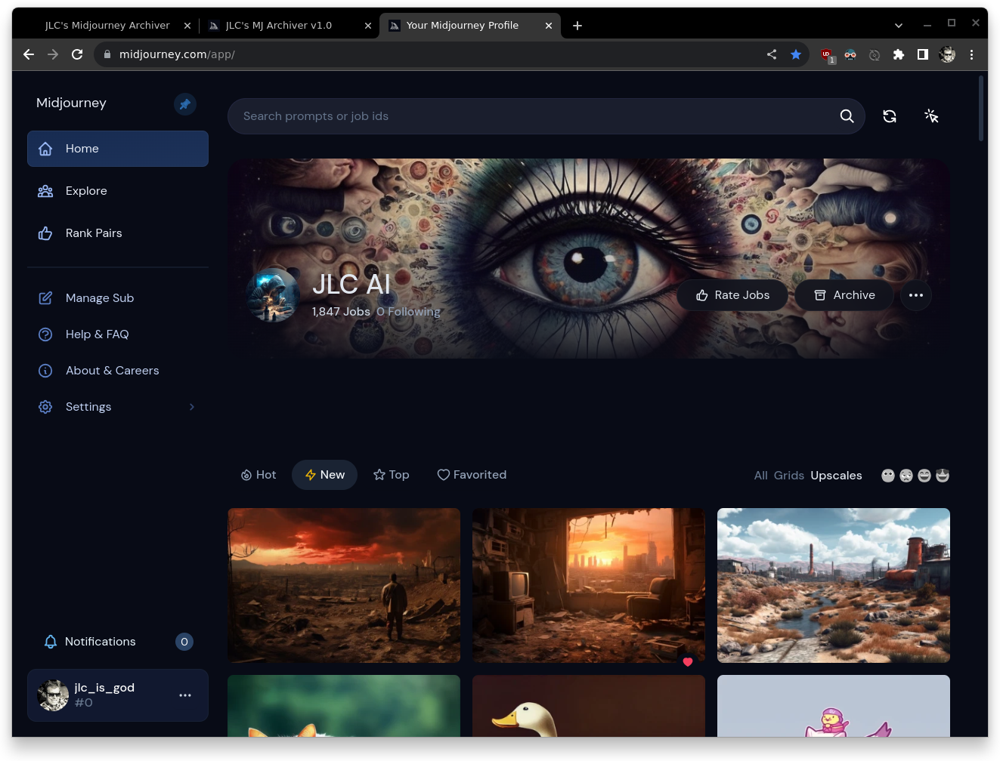
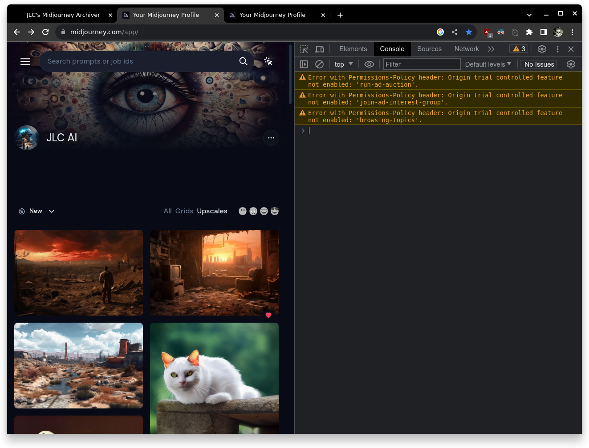
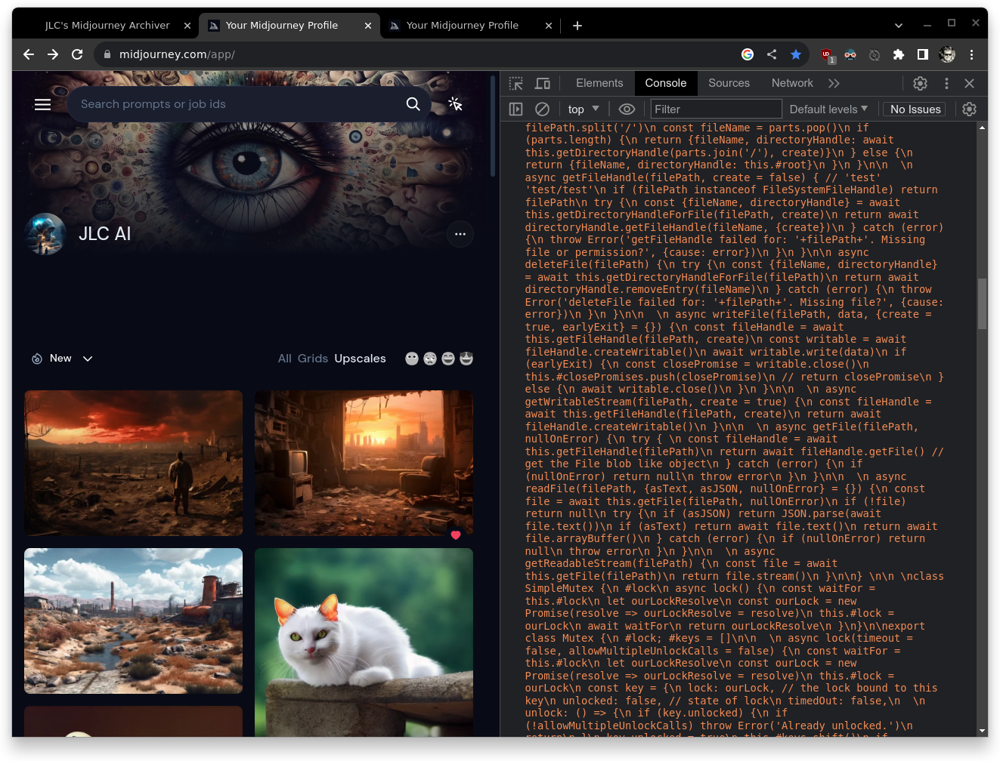
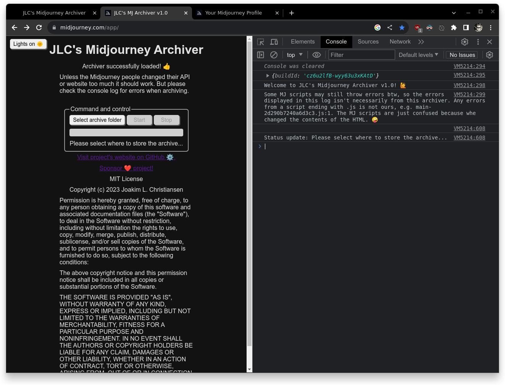
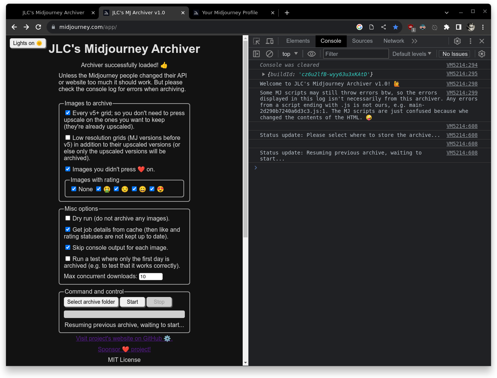
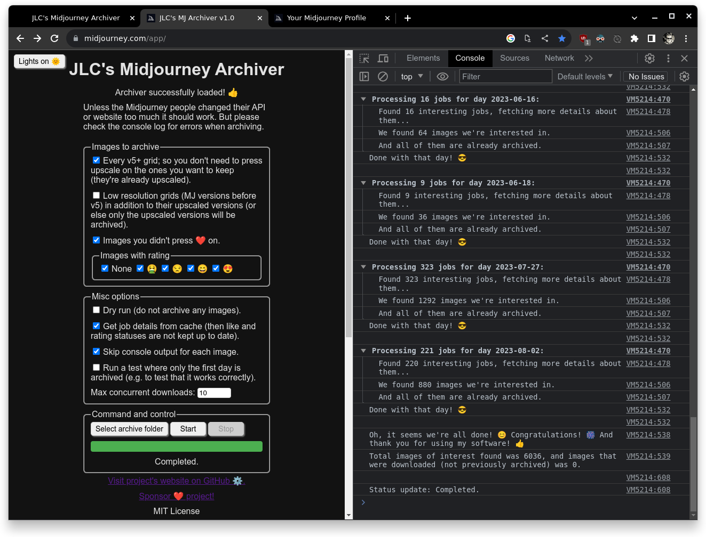

JLC's Midjourney Archiver
This is an application I have developed to allow anyone to create a local backup of their own Midjourney images (and to keep them in sync). I'm NOT affiliated with the Midjourney company.
You can read more below or you can jump directly to step 1 if you're impatient.
Features:
- No software to install (run it in any Chromium based browser).
- Remembers what it archived in its previous run; allowing you to sync only the latest changes and also to quickly resume if any errors caused it to stop (e.g. connection errors).
- The archive is fully portable, nothing is stored in the browser!
- Configure what to sync, e.g. skip low resolution grids and only keep the images that you upscaled or the high resolution v5+ grids.
- Get the high resolution v5+ grids without having to manually press a button on each one for a "virtual upscale job" (since they're already in a high resolution).
- Options to only sync the images you pressed like on or which you gave a certain rating.
- Will archive job details related to the archived images, e.g. the full command used.
- Allows downloaded images to be renamed or moved without causing any issues with the sync state (no re-downloads), since it keeps records on every image downloaded.
Project's website on GitHub:
This is an open source (MIT licensed) project and you can find the source code plus additional information about it on its GitHub page.
That's also where you can sponsor my efforts to develop a working solution like this. Since I am at the moment chronically sick, without a job, with tons of debt, two kids and a wife which I can't support economically; I would really appreciate it if you did! ❤️
Step 1:
Make sure that you use a Chromium based browser (e.g. Chrome, Brave, Edge, Opera), Safari or Firefox will not work! Then go to the Midjourney website and make sure that you are logged in! It should look similar to this (that's my profile btw):

Step 2:
Then open up the DevTools pane by pressing F12 and navigate to the console, it should look similar to this:

Step 3:
Press the "copy script to clipboard" button and paste it into the console (as shown in the first image) and then press the "Enter" key on your keyboard to execute it (as shown in the second image):


Step 4:
Now you must select a folder to use as your archive (preferably a new folder that is dedicated to this purpose) and then you can configure the archiver to your liking, as shown here:

Step 5:
Then you can press the "Start" button to start archiving your images based on the configuration that you selected. Here is what that might look like:

That's it! 🏅
I hope you have a nice time using it!
Copyright ©️ 2023 Joakim L. Christiansen
Visit project's website on GitHub ⚙️.
Sponsor ❤️ project!